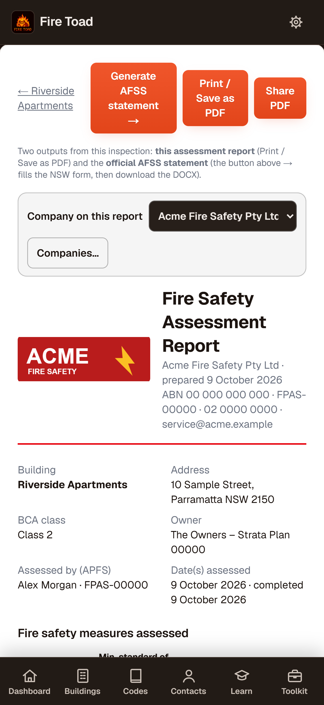
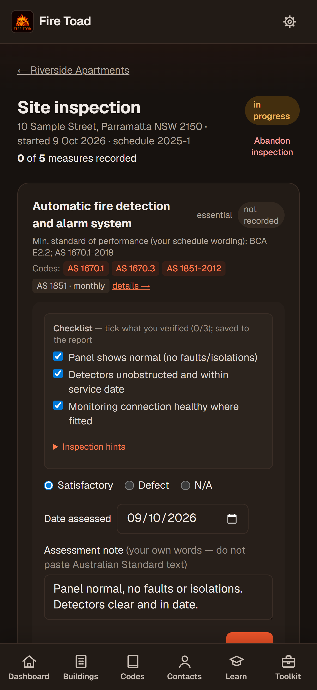
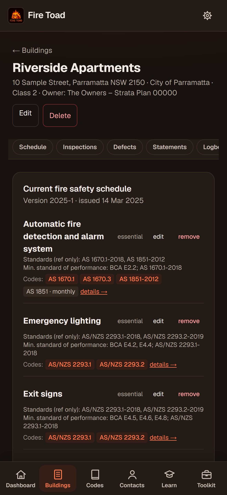
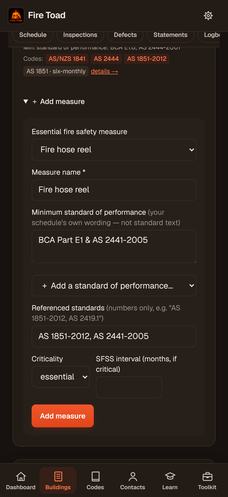
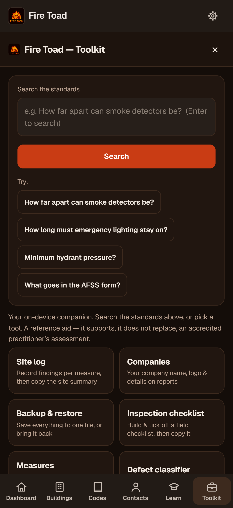
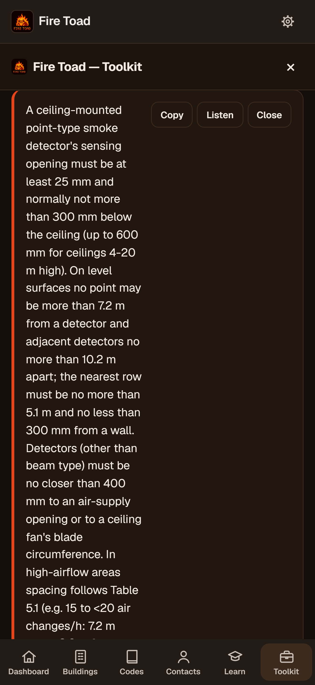
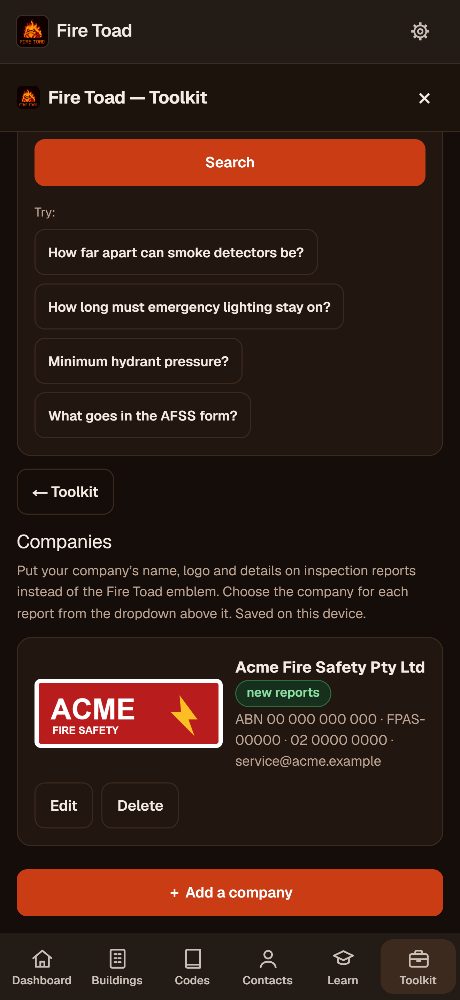

App Store screenshots
Saving on iPhone: tap a screenshot to open it full size, then press and hold it and choose Save to Photos. In App Store Connect, pick them from Photos in order, 1 to 7.













